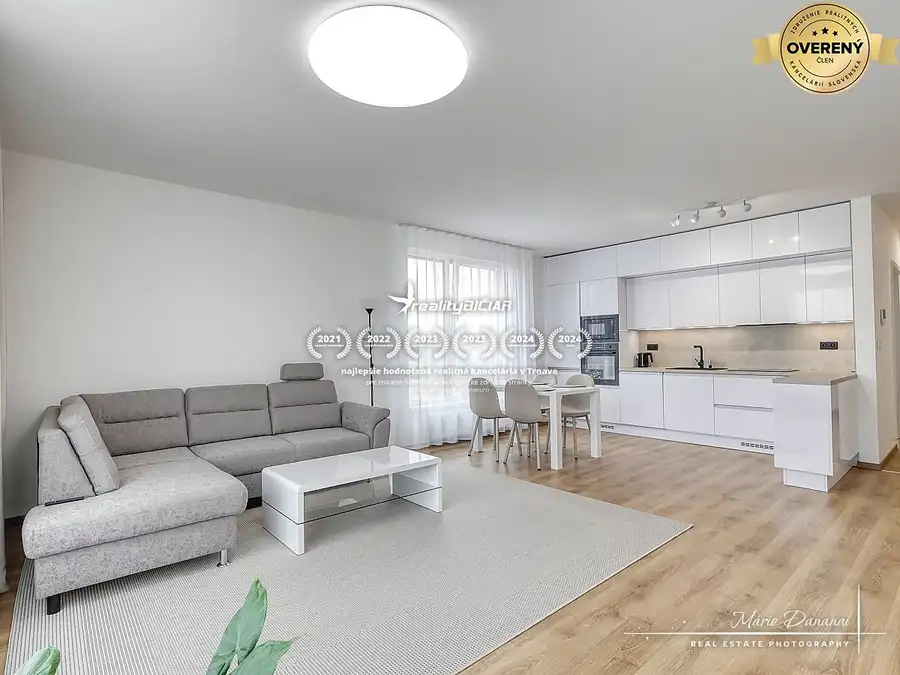
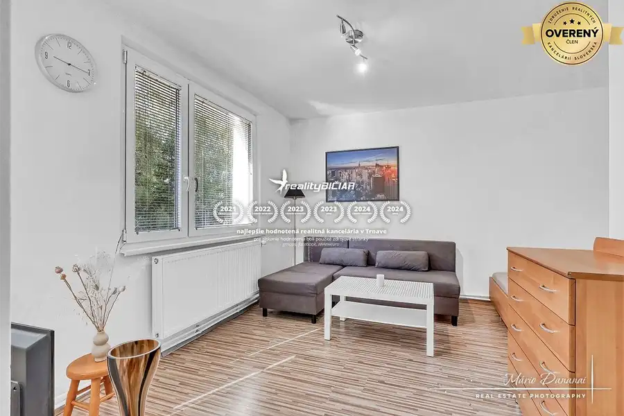
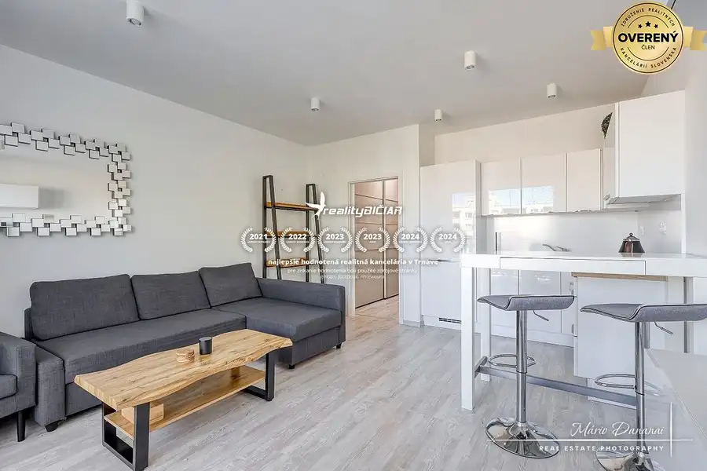

1-izbový byt v Šelpiciach s parkovacím miestom
Šelpice
- Dispozícia1-izbový
- Plocha28.77 m²
- Poschodie1. z 3
- Vlastníctvoosobné
O nehnuteľnosti
Realitná kancelária BIČIAR ponúka na prenájom moderne zariadený 1-izbový byt s vlastným parkovacím miestom v obci Šelpice, len niekoľko minút od Trnavy.
LOKALITA
Byt sa nachádza v pokojnej časti obce Šelpice, ktorá ponúka príjemné bývanie v tichom prostredí s výbornou dostupnosťou do krajského mesta Trnava. Lokalita je ideálnou voľbou pre tých, ktorí hľadajú pokoj mimo ruchu mesta, no zároveň chcú mať všetky jeho výhody na dosah.
NEHNUTEĽNOSŤ
Praktický a moderne zariadený 1-izbový byt sa nachádza na 1. poschodí z 3 v udržiavanom bytovom dome. Vďaka premyslenej dispozícii ponúka komfortné bývanie pre jednotlivca.
Dispozícia bytu pozostáva zo:
- vstupnej chodby,
- kúpeľne so sprchovacím kútom a toaletou,
- kuchyne s jedálenským kútom,
- samostatnej obytnej izby so vstavanou skriňou.
Byt sa prenajíma kompletne zariadený, takže nový nájomca sa môže nasťahovať bez ďalších investícií. Kuchyňa je vybavená elektrickou varnou doskou, chladničkou s mrazničkou, práčkou a základným kuchynským riadom. Obytná izba disponuje posteľou, televízorom a stolíkom pod TV. Vstavaná skriňa poskytuje dostatok úložného priestoru pre pohodlné každodenné bývanie.
Praktickým bonusom je komora, ktorá sa nachádza priamo vedľa bytu a ponúka ďalší úložný priestor.
Veľkou výhodou je aj vyhradené parkovacie miesto priamo pred bytovým domom, ktoré je zahrnuté v cene prenájmu.
VÝHODY NEHNUTEĽNOSTI
- kompletne zariadený byt pripravený na okamžité bývanie,
- pokojná lokalita len pár minút od Trnavy,
- vlastné parkovacie miesto v cene prenájmu,
- komora hneď vedľa bytu,
- moderné vybavenie a praktická dispozícia,
- okamžite voľný.
Byt je vhodný pre jednu osobu. Prenájom je určený bez domácich zvierat.
Byt je k dispozícii ihneď.
CENA
Cena prenájmu je mesačne 470,-€ vrátane energií, internetu a parkovacieho státia. Pri prevzatí bytu sa hradí depozit vo výške 470,-€ , prvé nájomné a provízia realitnej kancelárie.
Zavolajte nám ešte dnes na a dohodnite si termín obhliadky!
Dananaiová - maklér reality Bičiar
Naša realitná kancelária je členom ZDRUŽENIA REALITNÝCH KANCELÁRIÍ SLOVENSKA
VŠETKY PONUKY MAKLÉRA
https://www.reality-biciar.sk/dasa-dananaiova-ponuky-nehnutelnosti-118767
Parametre
| Celková rozloha | 28.77 m² |
|---|---|
| Úžitková plocha | 28.77 m² |
| Poschodie | 1/vyššie poschodie |
| Počet poschodí | 3 |
| Počet izieb | 1 |
| Vlastníctvo | osobné |
| Odvoz odpadu | áno |
| Plyn | nie |
| Internet | lokálny poskytovateľ |
| Kúpeľňa | sprchovací kút |
| Vykurovanie | vlastné - elektrické |
| Pivnica | áno |
| Výťah | nie |
| Parkovanie | vlastné vyhradené |
| Postavené z | tehla |
| Zariadenie | zariadený |
| Zateplený objekt | áno |
| Káblová televízia | nie |
| Energetický certifikát | áno |
| Okná | plastové |
| Orientácia | severná |
| Dátum zverejnenia | 6. 8. 2026 |
Kde to je
Mohlo by Vás zaujímať

BytPredané10 PredanéModerný 3-izbový byt na Cukrovej ulici v Trnave Trnava 3-izbový80 m²2. podlažie LOKALITA Moderný bytový komplex Cukrovar sa nachádza v tesnej blízkosti centra mesta Trnava so skvelou dostupnosťou na obchvat mesta. Na dosah máte…
BytPredané10 Predané1-izbový byt so spacím kútom na Okružnej ulici v Trnave Trnava 1-izbový29 m² LOKALITA Byt sa nachádza vo vyhľadávanej a pokojnej lokalite mesta Trnavy na Okružnej ulici, ktorá vďaka rýchlemu prístupu k širokej škále občianskej…
BytPredané10 Predané1-izbový byt v Trnave na Mikovíniho ulici s parkovaním Trnava 1-izbový32 m²5. podlažie Hľadáte moderné bývanie, do ktorého sa stačí len nasťahovať? Realitná kancelária BIČIAR Vám ponúka na prenájom štýlovo zariadený 1-izbový byt s…